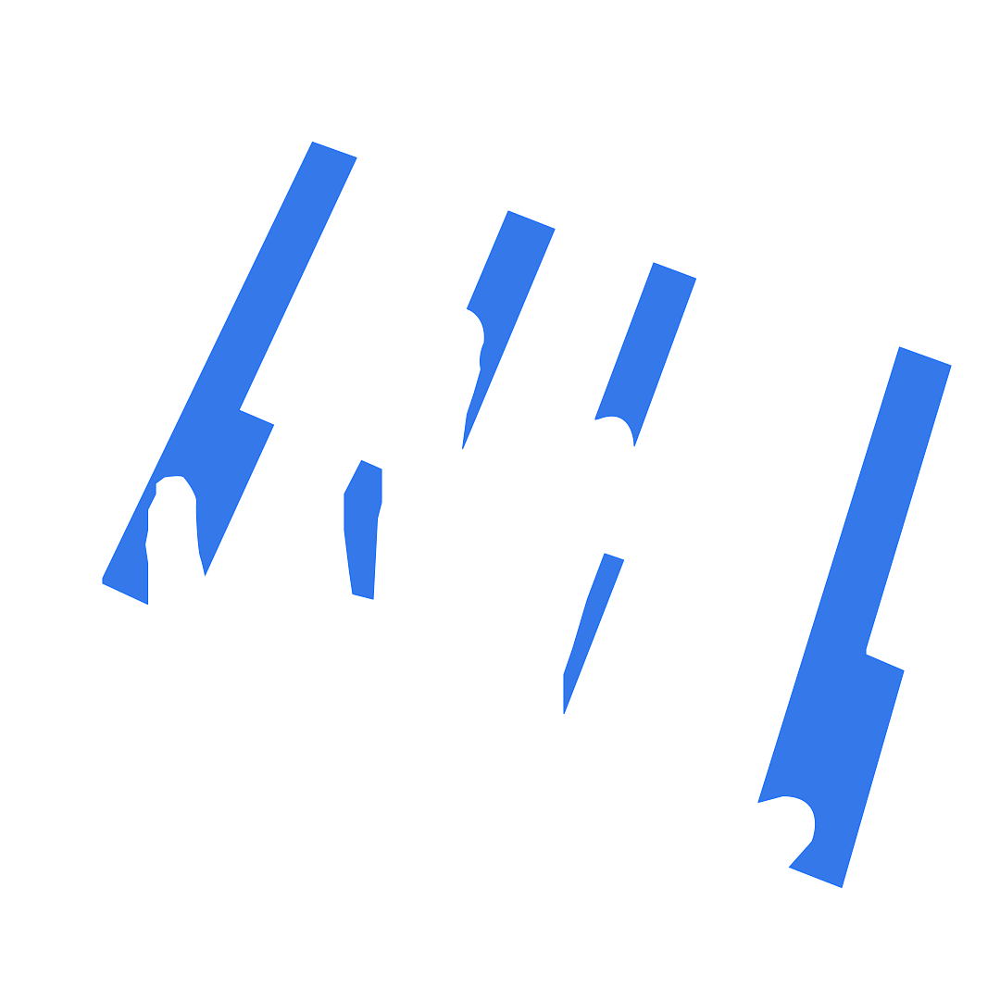
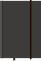

Skip to content
I’m
Fahrendra
.
Software Engineer who likes
piano so much.

Work &
projects.
See selected work
→
Small wins.
See the wins
→
Yes, yapping.
Read notes
→

I play piano
for the pauses.
♪
Play a note
←
→
@fahrendrakhoirul
↗
Code on streak.
Curious by default. Precise on purpose.
© 2026